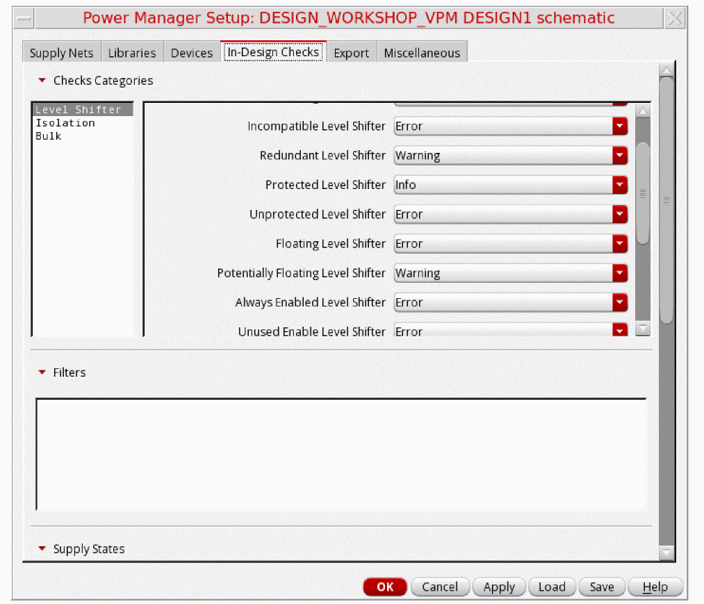
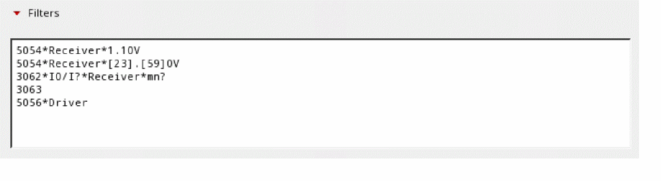
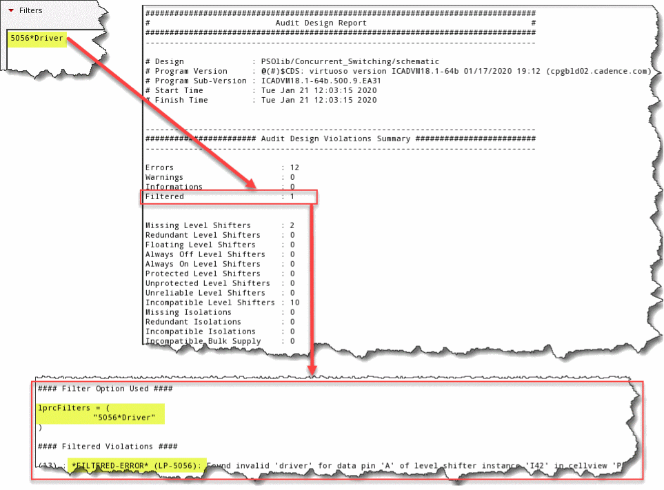
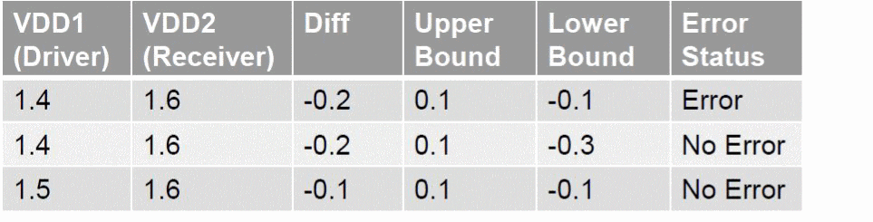
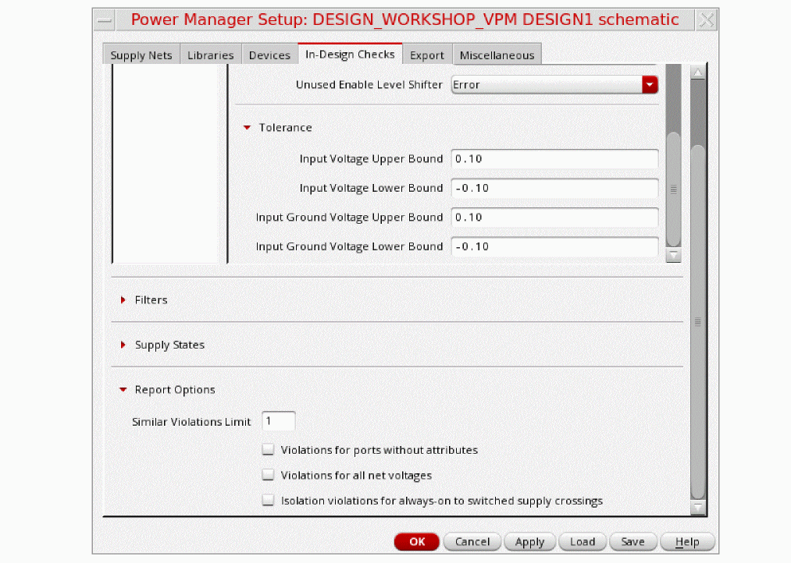

Performing In-Design Checks
Power Manager supports running a set of predefined and configurable circuit checks for mixed-signal designs that include devices and standard cells. You can define the severity of reporting of these checks on the In-Design Checks tab.
-
Specify the severity level of the results reported for the Level Shifter, Isolation, and Bulk checks in the Checks Categories section.
 -
Add filter patterns in the Filters field to filter some of the error and warning messages.
These errors are reported and exist in the design, but these are not a problem for the design in the given scenario.

Voltage Tolerance
The Tolerance section provides the flexibility to add tolerance for power and ground rail supply net voltage values for level shifter checks. All data path crossings within the tolerance limits are not flagged as violations. All the upper bound tolerances are positive numbers or zero and the lower bound tolerances are negative numbers or zero. The missing level shifters are reported for the signal crossings operating at different voltages when at least one of the following conditions, indicated by the GUI options, is true:
-
Input Voltage Upper Bound: The driver power voltage is more than the receiver power voltage by the upper bound input voltage tolerance. This value should be >=
0. -
Input Voltage Lower Bound: The driver power voltage is less than the receiver power voltage by the lower bound input voltage tolerance. This value should be <=
0. -
Input Ground Voltage Upper Bound: The driver ground voltage is more than the receiver ground voltage by the upper bound ground input voltage tolerance. This value should be >=
0.
The following table shows an example of scenario's which would reflect a level shifter error and the ones which would not reflect the error.
 -
Input Ground Voltage Lower Bound: The driver ground voltage is less than the receiver ground voltage by the lower bound ground input voltage tolerance. This value should be <=
0.

Related Topics
Registering Name-Based Supply Nets
Return to top